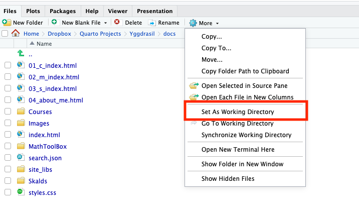

print("welcome to R")[1] "welcome to R"Machine learning is a discipline based on data and algorithms, so naturally, we need a programming language to implement algorithms and conduct experiments. For many reasons, the R language is a good choice, with its open-source nature and simple syntax being the primary ones. It’s important to note that this course does not focus on advanced applications of R, so we aim to minimize the learning curve, allowing students to quickly understand and master the language for convenient experimentation. In short, our ultimate goal is to understand models and algorithms through experimentation.
R is a powerful and versatile programming language primarily used for statistical computing, data analysis, and graphical representation. Developed in the early 1990s by Ross Ihaka and Robert Gentleman at the University of Auckland, R has since evolved into a robust tool that supports a wide range of applications in various fields, including data science, bioinformatics, and social sciences.
Main features of R:
For machine learning, data mining, and statistical analysis: R provides a comprehensive suite of statistical functions, making it ideal for conducting complex data analyses. It supports various statistical methods and techniques, including linear and nonlinear modeling, time-series analysis, classification, clustering, and machine learning. R facilitates the implementation of machine learning algorithms for predictive modeling and data mining.
For data Visualization: R excels at creating high-quality graphics and visualizations. With packages like ggplot2, users can generate intricate plots and charts to effectively communicate insights and findings.
For data Handling: R has powerful data manipulation capabilities, especially with packages like dplyr and tidyr. These tools allow for efficient data cleaning, transformation, and reshaping, making it easier to prepare datasets for analysis.
Efficient matrix computing: R is inherently designed for matrix operations and linear algebra, making it particularly well-suited for tasks involving matrix computations. This feature allows users to perform complex mathematical calculations efficiently, which is essential in statistics and data analysis.
Community Support: R has a vibrant and active community, offering extensive resources, tutorials, and forums for users to seek help and share knowledge. This community-driven approach fosters continuous improvement and innovation within the R ecosystem.
When I was a student, we could only program using R’s rudimentary built-in interface, and many tasks required our direct involvement. After I graduated with my Ph.D., RStudio became increasingly popular due to its powerful and powerful features. We also inevitably fell into it. Nowadays, while enjoying the convenience it brings, I can’t help but feel nostalgic when I look back on those youthful days.
RStudio is a powerful integrated development environment (IDE) specifically designed for R programming. It provides a user-friendly interface that enhances the R programming experience, making it easier for users to write code, visualize data, and manage projects. Whether you are a beginner or an experienced programmer, RStudio offers a range of features that streamline the data analysis process.
The main features of Rstudio are introduced in the following Figure. More advanced operations await your exploration.
cmd + enter, allowing you to quickly obtain results here. Bottom Left: This is our working environment area, where the most important tab is ‘Environment’. Here, you can easily see all the objects in the current environment at a glance. Bottom Right: There are two important tabs. First, after running data visualization commands, you will see results in tab Plots (4). Secondly, in the second tab (5), you can browse your path and search for the files you need.The outline of this tutorial:
In R, we can enter commands in the console to have the computer perform the corresponding tasks. For example, we want to print ‘welcome to R’
print("welcome to R")[1] "welcome to R"As a computing language specifically designed for statisticians, the most essential elements in R are functions, since almost all tasks are accomplished through various functions. Similar to most programming languages, the general form of a function in R is
FunctionName([input 1], [input 2], ..., [argument 1], [argument 2], ...)i.e. it consists of a function name, inputs and arguments enclosed in parentheses. For example, you can type the following math functions in the console,
sin(pi) # 'pi' is built-in constant representing the mathematical value of Pi[1] 1.224647e-16exp(1) # It returns the natural logarithm[1] 2.718282log(10, base = 10) # The logarithm of 10 to the base 10[1] 1Remark: As you can see from the code above, we use # sign to comment the code, in other words, characters after # are not considered as part of the command.
R has extensive and well-organized help documentation. You can access help for specific functions using the ? or help() function. For example:
?chisq.testYou will see the help document of this function in Rstudio.
The first function is c function, which can create a sequence of numbers based on your inputs and store in in memory. For example, we want to create a sequence of the integers from 1 to 10 and store it in a variable x.
x = c(1,2,3,4,5,6,7,8,9,10)You also can include characters in x by function c, for example
x = c(letters)
(x = c("I", "like", "R", "How about you?"))Remark: In R, if you use parentheses to enclose a command, then the outputs will be printed automatically.
Typing the integers from 1 to 10 can be done by another function seq
seq(1,10)or simply by colon operator :
1:10Well, the simple colon operator is neat but limited to integer sequence and increments of 1 (or -1, try 10:1 in your console). Use seq when you need more control over the sequence, for example, try the following code in your console
seq(1, 10, 2)
seq(1, 10, length.out = 5)
seq(0, 1, 0.1)The last function for creating sequence is rep, which can create copies of your inputs, for example
# guess what will we get by the following commands?
rep(1, 10)
rep(1:4, 4)
rep(rep(1:4,4), 2)
rep("I like R", 3)In R, you are allowed to encapsulate specific tasks or calculations that you can reuse throughout your code. The syntax for defining a function is
# Syntax of custom function
function_name = function(inputs, arguments) {
# Function body: code to execute
# Optionally return a value
return(value)
}For example, we want a function to calculate the sum of two input values
mySum = function(x = 1, y = 1){
res = x+y
return(res)
}
mySum(2,3)
mySum()function, the values assigned to x and y are default values, namely R will take two ones as input automatically if we don’t enter any inputs into function mySum, for example, the result of the last line above should be 2.return to indicate the results should be returned, then the results of the last line in the function will be returned as output.In R, data types (structure) define the nature of data that can be stored and manipulated. The main data types include numeric, character, logical, factor, array, matrix, data frame, list, function, each serving different purposes in data analysis and programming. Function class can check the type of a variable in the memory. Next, we list the simple types first and then illustrate more complex structures in details.
x = 3.14; y = 2
class(x)
class(y)This is a sample sentence with an annotated text that shows additional information on hover.
x = 5L; y = c(1L, 2L)
class(x)
class(y)x = 1 + 2i
class(x)x = "Machine Learning"
class(x)x = TRUE; y = FALSE
class(x)
class(y)
x & y # '&' is the AND operator
x | y # '|' is the OR operator
x + y # Can we calculate it?
x/y # And this?Remark: if you apply basic arithmetic operators to logical values, then they will be transformed to numeric first, and then execute the calculations.
Array is a data structure that can hold multiple values in a grid-like format, organized into dimensions (like rows, columns, and layers). Arrays can be one-dimensional (like a vector), two-dimensional (like a matrix), or multi-dimensional (with three or more dimensions).
Vector:
In R, a vector is one-dimensional array that contains data with same type. The outputs of the functions c, seq, and rep are essentially vectors, with the only difference being that they are viewed as a sequence with a length, but do not have dimensional attributes. For example,
x = seq(1,10, by = 0.1)
class(x) # output is numeric
length(x) # output is 91
dim(x) # output is NULLIn some programming language, such kind of objects without dimensional attributes are called tuple. This means that we can slice this type of sequence object to extract the desired elements. We will introduce slicing in the discussion about vectors below.
One can use the array function to embed the dimension attribute into such an object and then obtain a real vector, for example,
x = seq(0,1,0.2)
x = array(x, dim = length(x))
# length(x) is the default value for 'dim'
class(x)
length(x)
dim(x)One can use [index] to slice an array, for examples
# Guess the outputs first, verify them in R
x = seq(0,1,by=0.2)
x[1] # the first element in an array
x[length(x)]
x[1:3]
x[c(1,2,5)]
x[rep(2:4, 3)]
x[-1]
x[-c(1,2,5)]Some operations, examples
x = seq(0,1,by=0.2)
2*x + 1 # elementwise operations
t(x) # transpose
dim(t(x)) # column vector
dim(t(t(x))) # row vectorMatrix:
Matrices in R are the same as matrices in linear algebra, that is matrix is a rectangle array. So, we can apply function array to create matrix as well, but need to specify two numbers for the argument dim. For example,
X = array(1:10, dim = c(2,5))
XFrom the output of the example above we can see that we can only fill in the elements by columns. If we want to fill in the elements by rows, then we have to use another function matrix. For example,
X = matrix(1:10, nrow = 2, ncol = 5, byrow = FALSE)
X
X = matrix(1:10, nrow = 2, ncol = 5, byrow = TRUE)
XFor slicing of matrix, see examples
# Guess the outputs first, verify them in R
X = matrix(1:9,3,3,byrow=T)
X[1,2]
X[1,]
X[,3]
X[1:2,2:3]
X[ array(c(1,2), dim = c(1,2)) ]
X[ array(c(1,2,3,2), dim = c(2,2)) ]More operations for matrix, see examples
X = matrix(1:9,3,3,byrow=T)
X*X # elementwise multiplication
X%*%X # matrix multiplication (in linear algebra)
t(X) # transpose
det(X) # calculate determinant
X = matrix(c(1,2,2,1),2,2)
eigen(X) # eigen decomposition of a square matrixTwo useful functions, cbind and rbind, which can combine objects by column and row, respectively. See examples,
x1 = 1:3
x2 = 3:5
(X = cbind(x1,x2))
(X = rbind(x1,x2))
class(X) # check the type of outputsAs a programming language originally designed for statisticians, importing data and setting a specific structure for it is essential. It is so called data frame. In R, we can use various functions to read in different types of data, such as txt, csv, xlsx, and more. For example, you can apply read.table function to import data saved in a txt file. You can download Boston data here.
# Prepare a txt file, 'Boston.txt', in a director
setwd("dir containing your data")
# we set the dir containg your data as the working director.
dat = read.table("Boston.txt", sep=",", header = T)Remark: Setting working director (WD) is always useful since it can simplify many things, for example, if we don’t set the WD as the folder containing ‘Boston.txt’, then you have to specify the dir in the first argument of the read.table function. Setting a WD can be done by function setwd, and for checking the current WD, you can use function getwd. In Rstudio, this action also can be done using mouse actions, see figure below.

Data frame is a fundamental data structure used for storing tabular data, where each column can hold different types of data (e.g., numeric, character, or factor). Data frame can be created by function data.frame. For example:
(X = cbind(x1,x2))
(dat = data.frame(x1,x2))
class(X)
class(dat) # it seems there is no difference between a matrix and a dataframe
X%*%t(X) # try this
dat%*%t(dat) # try this -> matrix multiplication is not allowed.So, usually, the operations and functions for a matrix are not allowed to apply to a data frame. Including different types of data is the main difference between data frame and matrix. For example:
# with the same demo data above
x3 = letters[1:3] # define another variable
X = cbind(x1, x2, x3)
dat = data.frame(x1, x2, x3)
X
dat # compare `X` and `dat`, draw yoru conclusions.For a data frame, we still can use the same method as for matrix to slice. Another more practical way is using $ to slice. For examples:
# with the same example above
dat[,3]
dat$x3Some useful functions for data frames
head and tail functions: they can help us to check the first and last few lines respectively. For examples:dat = iris # iris is a pre-stored data set in R which includes 150 iris flowers
head(dat)
tail(dat)
head(dat, 10)names function: it can help us quickly check the names of all variables.
attach and detach functions: people feel very inconvenient to use $ to slice a data frame, but want to use the variable names directly. In this case, ´attach´ function can help us go into such kind of mode, and apparently detach function can cease this mode. For examples:
dat = iris
names(iris) # [1] "Sepal.Length" "Sepal.Width" "Petal.Length" "Petal.Width" "Species"
Species # you can't find it
dat$Species # works
attach(dat)
Species # also works
detach(dat)
SpeciesThe last type of data structure I want to introduce to you is the list. Compared to matrices and data frames, its frequency of use in programming is not very high, but it is still very useful and reflects a higher level of understanding of R data structures. It is a versatile and powerful data structure that can hold an ordered collection of elements, which can be of different types. Unlike vectors, matrices, and data frames, lists can contain mixed data types, including other lists, vectors, data frames, and even functions. conversely, a data frame is essentially a type of list. Let’s see some examples
# Example 1
y = list()
y[[1]] = 1:10 # In a list, we use double square brackets to slice.
y[[2]] = letters[2:7]
y[[3]] = function(x){2*x}
y
y[[3]](2) # what is this?# Example 2
y = list()
y$x = 1:10 # In a list, we also can use `$` to slice.
y$letters = letters[2:7]
y$double = function(x){2*x}
y
y$double(2) # Now, you understand why data frame is also a list.Remark: Function is alo a kind of data type or structure in R. It has been investigated before, so we don’t discuss it here again.
Flow control refers to the mechanisms and structures used in programming to dictate the order in which instructions are executed in a program. It allows for making decisions, repeating actions, and controlling the flow of execution based on certain conditions or logic. In R and most programming languages, flow control is essential for creating dynamic and responsive programs. Here, we will mainly introduce loops and conditional statement.
The if/else statement executes a block of code based on a specified condition. The syntax is:
# Syntax of If/Else statement
if (CONDITION) {
# Code block to be executed if CONDITION is TRUE
} else {
# Code block to be executed if CONDITION is FALSE
}In this syntax, the code block will be executed based on whether the CONDITION is TRUE or FALSE. For example:
# Example 1
x = 6
if(x > 5){
print("x is greater than 5")
}else{
print("x is 5 or less")
}In R, else is not mandatory, especially for simple conditional checks. R allows you to use if to evaluate a condition and execute code if the condition is true, without requiring an else block to handle other cases. For example,
# Example 2
x = 6
if(x > 5){
print("x is greater than 5")
}The ifelse function in R is used to execute one of two values based on a specified condition, element-wise across a vector. The syntax is:
# Syntax of function 'ifelse'
ifelse(CONDITION, VALUE_IF_TRUE, VALUE_IF_FALSE)In this syntax, ifelse evaluates each element of CONDITION. If the element meets the CONDITION (is TRUE), VALUE_IF_TRUE is returned; otherwise, VALUE_IF_FALSE is returned. For example:
# Example 3
x = c(3, 9, 1, 6, 5)
result = ifelse(x > 5, "grater than 5", "not grater than 5")
print(result)In this example, the code will check each element in x to see if it is greater than 5. If true, it will return “greater than 5”; otherwise, it will return “not greater than 5”.
For loop repeats a block of code a specified number of times. The syntax is
# Syntax of for loop
for (i in SEQUENCE) {
# Code block to be executed
}In loop syntax, the code block will be executed with respect to each elements in SEQUENCE. For example, we want to print all numbers within 50 that are divisible by 3.
# Example 4
for(i in 1:50){
if (i %% 3 == 0){ # %% is modulo operator, i.e. returns the remiainder of i/3
print(i)
}
}Remark: The form of SEQUENCE can vary in many ways and doesn’t even need to be a numeric array. See the examples below.
# Example 5: print all the even number within 50
for(i in seq(2, 50, by = 2)){
print(i)
}# Example 6: say hello to famous mathematicians
name_list = c("Gauss", "Euler", "Fourier", "Cantor")
for(i in name_list){
print(paste0("Hello, ", i, "!"))
}Different from a for loop, a while loop continues to execute a block of code as long as a specified condition remains true. This means that the number of iterations is not predetermined; instead, it depends on the state of the condition being evaluated. The syntax is
# Syntax of while loop
while (CONDITION) {
# Code block to be executed
}The CONDITION could be a logical value, or a command resulting logical value. The same example of for loop above, example 4, also can be implemented through a while loop.
# Example 7
# Initialize the starting number
number = 3
# While loop to print numbers divisible by 3 up to 50
while(number <= 50){
print(number) # Print the current number
number = number + 3 # Move to the next multiple of 3
}Note: You may temporarily ignore this part and come back to read after the lecture 3.
As a programming language originally designed for statisticians, functions related to probability distribution are essential. For example, how to generate random numbers from a distribution, how to calculate the probability of a random event, how to find the corresponding quantile values based on a given probability, and how to calculate the density function value of a given distribution are all well implemented in R. Below, we will introduce 4 functions using the normal (Gaussian) distribution as an example.
Generating random numbers is essential for simulations, statistical modeling, and resampling techniques like bootstrapping, where random data or sampling is needed to test models, explore scenarios, or understand variability.
In R, the rnorm function is applied to generate random numbers from a normal (Gaussian) distribution. The syntax is
# Syntax of fucntion 'rnorm'
rnorm(SampleSize, mean = 0, sd = 1)For example,
x = rnorm(100)
hist(x) Remark: We can’t simulate real random numbers on computer, but only generate pseudo-random numbers through algorithms designed to produce sequences that mimic the properties of randomness. These algorithms start with an initial value known as the random seed, which serves as the starting point for generating the sequence. By changing the seed, we can create different sequences of pseudo-random numbers, allowing for reproducibility in simulations and analyses. While these numbers may appear random, they are ultimately determined by the algorithm and the initial seed value. In R, the random seed can be controled by function ‘set.seed’, for example
# Next, if you get the same value for 'a' and 'b', I will pay you 1000kr
(a = rnorm(1))
(b = rnorm(1))
# Next, if you get different values for 'a' and 'b', I will pay you 1000kr
set.seed(2024)
(a = rnorm(1))
set.seed(2024)
(b = rnorm(1))Life is seems like a tapestry woven with random numbers, however, to some extent it is not really random, but pseudo-random. On the one hand, it is a box of chocolates - every moment is a surprise, sweet or bitter, unfolding in unpredictable ways. You never know what the next piece will bring. However, on the other hand, we seem to be unable to escape the arrangement of fate. When you were born, God, like a careful gardener, had selected a unique seed for you. This seed contains the potential of your existence and shapes your journey. No matter what your current situation is, we should always cherish our unique seed.
The density value is useful not only in probability but also statistics, because it presents an important quantity, likelihood value. It will be discussed in the next lecture in details.
In R, the dnorm function calculates the density (or height) of the normal distribution at a specific value. The syntax is
# Syntax of function 'dnorm'
dnorm(x, mean = 0, sd = 1)For example
# The outputs of the following two lines should be equal. Why?
dnorm(0)
1/sqrt(2*pi)In R, the pnorm function calculates the probability of an event of a normal distribution. The syntax is
# Syntax of function 'pnorm'
pnorm(a, mean = 0, sd = 1)This function calculate the probability \(\Pr(X<a)\) which is the area under the normal density curve within the interval \([-\infty, a]\), for example,
pnorm(1)[1] 0.8413447Quantile value is very essential in statistics, for example, you all need quantile value whether you are conducting hypothesis testing or calculating confidence intervals. Actually, it is just an inverse operation of calculating probability, e.g. the quantile value of \(0.84\) for a standard normal distribution is approximately \(1\) The syntax is similar, for example, you should be familiar with the following quantile value
qnorm(0.975, 0, 1) # what is it?# Functions related to normal distribution.
rnorm() # generate random numbers from normal distribution
dnorm() # find the density value of normal distribution
pnorm() # calculate the probability of an event associated to normal distribution
qnorm() # determine the quantile value of normal distributionRemark: As you can see, there is a pattern in the function names, i.e. a letter + norm, for example in ‘rnorm’,
This naming convention is applied to other distributions as well. For example:
rbinom: generates random numbers from a binomial distributiondexp: finds density value of an exponential distributionppois: calculates probability of a Poisson distributionqunif: determines the quantile value of a uniform distributionAlright, we now have a basic understanding of the most fundamental operations in R programming, most of which are things we will frequently use in this course. Next, we’ll introduce a few more useful concepts and some commonly used functions.
In R, the workspace refers to the environment where all objects (such as variables, functions, and data) are stored during an R session. It acts as a storage area that retains the data and objects you create, allowing you to work with them without needing to re-import or redefine them every time you start R. The most common scenario is when you’ve worked hard all day and want to take a break, but if you close R, all the objects in your working environment (memory) will disappear. In this case, you can save your current working environment as a workspace file, which has a .RData extension.
There are two ways to save your working environment as a workspace file. First, by mouse actions, you can click Session -> Save Workspace As.... Or you can do it by command
save.image("FileName.RData")The next day, after enjoying the morning sunshine (if conditions permit) and your coffee, you can load this file and continue your hard work!
If R could only be used for scientific computing, it would undoubtedly be overshadowed by numerous other scientific computing programs. The true strength of R lies in its extensibility, which is achieved through R packages. Initially, R packages were primarily written by statisticians to implement new methods, such as lme4 for fitting generalized linear mixed-effects models; survival for conducting survival analysis; psych for psychological research, and so on. However, writing packages is not exclusive to statisticians; an increasing number of non-statistical application packages have also been developed. Today, R has become incredibly versatile through the extension of various packages, for example this website is written by quarto package. Below, we will briefly illustrate how to install and load packages using examples.
install.packages("kernelab")
# to install a new package. Note: the quotation marks are essential.
library(kernelab)
# you can import a package by function `library`Next, some useful functions are introduced. These functions were extremely useful back when I was a student. However, in the era of RStudio, their usefulness has been greatly reduced. Nonetheless, they are still quite necessary for those who prefer keyboard operations or need to work on a server. In addition, these functions can, to some extent, enhance R users’ understanding of R programming.
ls function: it can list all the objects in the workspace or current environment.
rm function: it can help us to remove objects from the workspace or current environment.
# Example 1
x = 1
rm(x)
# Example 2
rm(list = ls()) # Danger Warning: This command will remove all objects listed by `ls`str function: it displays the structure of an object.# Example 1
x = list()
x[[1]] = 1:10
x[[2]] = letters[4:10]
str(x)# Example 2
res = t.test(rnorm(30)) # do one sample t-test and save results in `res`
str(res)
# You can see that the testing results are saved in a list of 10.
# if you want to extract elements from it, the information coveryed by ´str´ is ideal.summary function: it helps us to summarize useful information from an R objects. The information extracted depends on the type of the object. For examples# Example 1
dat = iris[,-5] # we use the first 4 variable from iris data
summary(dat) # the type of ´dat´ is dataframe, then the summarized informations are...# Example 2
res = t.test(rnorm(30))
summary(res)
# the type of ´res´ is results of t test. The designer of this function decided
# to show the names of all the elements in ´res´, similiar to the output of ´str´unique and table functions: they are useful when you want to check all possible values in a variable and the frequency of different possible values.# First, we create a small demo dataset
treatment = c(1,1,0,0,1,1,0,0)
block = c(1,1,1,1,2,2,2,2)
sex = c("F","M","M","M","F","F","M","F")
age = c(19,20,28,22,21,19,23,20)
outcome = c(20,19,33,12,54,87,98,84)
Dat = data.frame(treatment, block, sex, age, outcome)
head(Data, 8)
# Example 1:
unique(Dat$sex)
table(Dat$sex)
unique(Dat$age)
table(Dat$age)
# Example 2:
table(Data$sex, Data$treatment) # do you know the name of the outputs?which function: it finds the index of elements that satisfy some conditions in a vector, or matrix, or data frame.# Example: Use the same demo data above
which(Dat$sex == "M")
which(Dat$age < 21)apply function: it is used to perform operations on rows or columns of matrices, data frames, or higher-dimensional arrays. It allows you to apply a function across the rows or columns without needing to use loops, making code more concise and often more efficient.# Syntax:
apply(X, margin, fun)
# `margin` is an integer specifying whether to apply the `fun` across rows (1) or columns (2) # Examples: Use the demo data but ignore the variable `sex`
Dat = Dat[, -3]
apply(Dat, 2, mean)Next, show some useful functions for graphics. The ggplot2 package is definitely the top choice for plotting, but sometimes the following functions are more practical and convenient for data visualization. I will only list them below, and you are already strong enough to investigate them by yourself :)
hist function: it can help use check the distribution of a variable.
plot function: it is usually used to show the scatter plot of two variables.
pairs function: it shows the pairwise scatter plot of many variables.
Alright, our short journey with R programming has come to an end. I hope you now have a basic understanding of this software, its basic operations, and various syntax. As I mentioned earlier, the goal of this lecture, or even this course, is not solely to train you in R but rather to give you a quick introduction to this simple programming language so that we can use it to study machine learning concepts later on. The R programming language is a powerful tool in the field of data science. You can continue exploring various advanced techniques afterward.
Lastly, I want to say that the best way to learn any language is to engage in conversation; the same applies to programming languages. Only by repeatedly typing commands and scripts into the computer will you truly master and become familiar with this programming language.